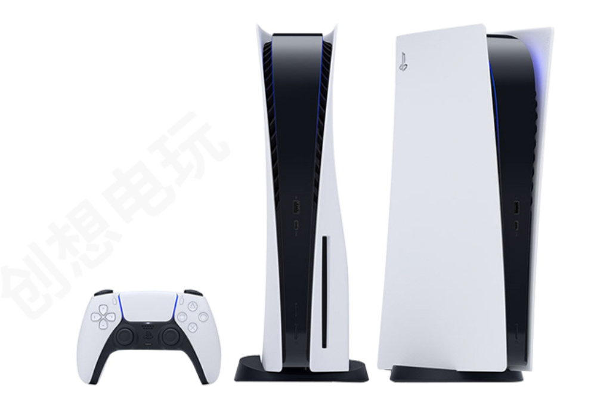

本文为本人依据个人对新家装修的偏好，收集相关网络优质资源，整理而成，供个人及设计师参考。
其中大部分图片来自好好住 app，知乎，小红书 app，微信公众号、淘宝等网络资源，如有侵权请评论联系删除。
背景简介
房屋状况
小高层，处于高楼层，南北通透，光照较强、通风好、视野开阔；92 平建筑面积，套内 70 平，两室一厅一卫，带南北阳台；旧房改造。
居住者肖像
夫妻两，未来会有一个孩子（暂时只需考虑一个），都喜欢躺沙发。
- 男主人：183 cm，做饭，家庭办公，使用笔记本工作。
- 女主人：160 cm，偶尔做饭，喜欢做饮品，收纳整理，看书，使用 pad。
父母，男方或女方一方父母会经常来居住
- 父亲：175 cm，做饭
- 母亲：155 cm，爱清洁，洁癖，嫌弃猫
- 岳父：170 cm，偶尔过来
- 岳母：162 cm，做饭，嫌弃猫
宠物
- 三三，缅因猫，大体型，蒲公英属性，战斗力强，吃喝拉撒玩需要满足。

装修原则
- 安全健康: 配电合理、材料环保耐用、家具固定稳固、无尖锐锋利物品。
- 实用舒适：不能为了好看牺牲实用性，不能为了收纳而过分压缩人的空间；居住体验好：沙发靠着舒服、床躺着舒服、座椅坐着舒服、做菜舒服、淋浴舒服，打扫卫生轻松，工作环境适宜，夫妻两与父母、猫和谐相处。
- 高颜值：美观、考虑便利的同时、兼顾美观，高颜值。
- 无卫生死角：打扫方便，耐脏、不易磕碰、发霉、开裂、变形。
- 收纳合理：要有一定的收纳空间（25-30% 投影面积），同时布局合理，考虑功能区划。
- 近未来规划：考虑未来五年左右的居住使用，适当留白。
- 合理预算：保证以上需求的同时，尽可能节约预算；可以后期添置的，不需要急于一步到位。
- 计划详细、考虑周全。
装修风格
极简风格，代表风格的简约、克制、内敛；但它的表现形式并不是单一的，而丰富多样的，如：原木极简风格，北欧极简风，高级灰极简风，混搭极简风。
以下为个人喜欢的风格：


1.色调分主次
白色主色调，木色为次主色调，黑色为点缀色；同时，色调也可以有多个层次。


2.木色以中等深度、中性温度为主，也可以有深浅层次。


3.丰富的线条，凸显层次感，简单不简陋。


3.加入轻奢元素


4.亮点与情趣

总结：
以现代简约为主要风格（但不需要拘泥于风格范式），色彩上以大面积的白+小面积的黑色(面或线条)+适当面积木饰面，并加入金属，透明玻璃元素，以及绿色 (植物)；高级但绝不冷淡，简约且克制，但也要允许生活与慵懒。
布局设想
客厅布局
1. 整面墙的电视柜
-
三七原则，有藏有露
-
白色柜门，电视后面为深色或黑色背板。
2. 主沙发：2.5米以内，
- 科技布材质
- 底部允许扫地机器人通过
- 高颜值
比如：


3. 不要茶几，但可以有边几
4. 沙发前铺地毯，扫地机器人行走无障碍
5. 高颜值、舒适的单人沙发，最好不怕猫爪
6. 高颜值的落地灯/阅读灯
7. 绿色植物，不一定放客厅，对猫无毒，如琴叶榕、仙人掌、多肉植物等


8. 无主灯，以射灯等形式为主，不要灯箱，可考虑不做吊顶，灯不用太多
9. 地板已购，通铺客餐厅和卧室，鱼骨，色号如下可选：


餐厅布局
1. 吧台/岛台，分隔开厨房与餐厅，吧台考虑放置水槽？
2. 餐桌
- 兼顾平时的工作、看书、喝茶饮
- 岩板或符合风格的木质
- 靠着岛台

- 一侧设计卡座，需适当考虑舒适性
3. 餐边柜
-
可以和鞋柜连一起
-
吊柜可以不要，用隔板代替，不压抑，或者直接留白/挂画
4. 吊灯（桌面）+射灯（餐边柜）
厨房布局
1. 连通北阳台
2. 可用推拉吊柜玻璃门与餐厅完全隔断
3. U型操作台，一侧为吧台
4. 橱柜可考虑上下两种颜色，下白色、上木色
5. 台面灶台和操作台高度差
6. 地砖耐脏
7. 吊柜不要太多、鸡肋处可用隔板或留白，吊柜下设置灯带
8. 冰箱嵌入柜子
9. 台下盆+大单槽
卫生间布局
1. 尽量实现台盆外置，干湿分离
2. 淋浴区长方形为佳
3. 壁挂马桶，可设置假墙
4. 壁龛？
5. 台盆下为抽屉柜，上方镜柜
主卧布局
1. 1.8的床
2. 衣柜
3. 梳妆台
4. 衣架
5. 射灯+吊灯/氛围灯
6. 感应灯带
次卧布局
1. 1.5的床
2. 升降办公桌+办公椅
3. 衣柜
阳台布局
1. 洗衣机烘衣机
2. 洗衣台盆（是否可以放在北阳台）
3. 猫隔间+猫爬架
4. 阳台与客厅设置玻璃吊轨推拉门
设备、电器列表
一、舒适系统：
1. 空调：大金，已有设备，已安装。
2. 水地暖：沃乐夫 2k 炉子（体积较大），已购设备


注意：水电定位，提前三天通知师傅上门。
3. 新风：松下，三进四出，已购设备，83-170w。


注意：水电定位，提前三天通知师傅上门。
4. 除湿机：可移动式，未购置，考虑浦立适 prince-plus，305W。


5. 空气净化器：博世，除甲醛款，已有设备，45W。**


6. 智能家居，未购入，包括：
- 摄像头
- 电子猫眼
- 电动窗帘（百叶）
- 人体感应灯
- 烟雾报警
- 全屋 ap
厨房
1. 冰箱：博世纤薄款，未购置，1200w

2. 油烟机：方太，已购置，268w


3. 蒸烤箱：美的，已购置，3150w


4. 洗碗机：美的，已购置，1760w


5. 灶具：美的，已购置，天然气


6. 前置过滤器：博世 AQ1200P，未购置

7. 软水机：怡口，已购置，瓦数未知。

8. 净水器：怡口，已购置


9. 小厨宝：博世10L，未购置


10. 电饭煲：已有设备，380w，后续再更换
11. 破壁机：已有设备
12. 豆浆机：已有设备
餐厅
1. 电热水壶/饮水器：已购设备，2200w

2. 部分厨房电器也可以考虑放到这里
阳台
1. 洗衣机和烘衣机：小天鹅，已购置，808w? + 36w?


2. 猫爬架：需定制，未购置
考虑在阳台一侧设置玻璃门，内部设置猫爬架
3. 电动晾衣架：未购置，已有？
但不能太大，也可以不是电动的，采用墙面固定的折叠式？
客厅
1. 电视：49-55 寸，未购置，考虑如下款


2. 音响：小型便携式，后续购置，暂时天猫精灵（红色）😂
3. ps5：后续购置, 遥遥无期？😢

4. 卫生间
1. 智能马桶盖：未购入，后续购入


2. 电热毛巾架：未购置
暂时未选择
3. 壁挂洗衣机：未购置
暂时未选择
清洁卫生
1. 扫地机器人：科沃兹，已有设备
2. 无绳吸尘器：松下或戴森，未购置
其他
1. 划船机

2. 瑜伽垫等运动器材
考虑客厅收纳